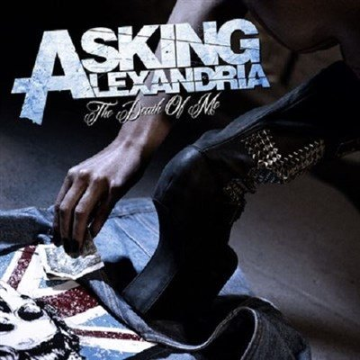

Il mondo prima di te

Rellena los espacios de acuerdo a la canción
Un giorno capiremo chi siamo senza dire niente
E sembrerà normale
Immaginare che il mondo scelga di girare
Attorno a un altro sole
È una casa senza le pareti
Da costruire nel tempo, costruire dal niente
Come un fiore fino alle radici
È il mio regalo per te da dissetare e crescere
E siamo montagne a picco sul mare
Dal punto più alto impariamo a volare
Poi ritorniamo giù
Lungo discese pericolose
Senza difese
Ritorniamo giù
A illuminarci come l'estate
Che adesso brilla
Com'era il mondo prima di te?
Un giorno capiremo chi siamo senza dire niente
Niente di speciale
E poi ci toglieremo i vestiti
Per poter volare più vicino al sole
, so just know this:
In una casa senza le pareti
Da costruire nel tempo
Costruire dal niente
Siamo fiori
Siamo due radici
Che si dividono per ricominciare a crescere
E siamo montagne a picco sul mare
Dal punto più alto impariamo a volare
Poi ritorniamo giù
Lungo discese pericolose
Senza difese
Ritorniamo giù
A illuminarci come l'estate
Che adesso brilla
Com'era il mondo prima di te?
Ora e per sempre ti chiedo di entrare
All'ultima festa e nel mio primo amore
Poi ritorniamo giù
Lungo discese pericolose
Senza difese
Ritorniamo giù
A illuminarci come l'estate
Che adesso brilla
Com'era il mondo prima di te?
Com'era il mondo prima di te?
Com'era il mondo prima di te?
Inviare
Ritorno